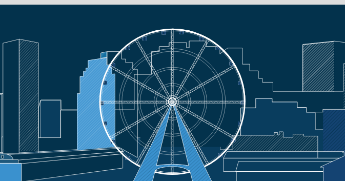
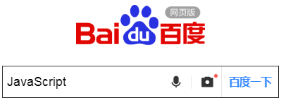
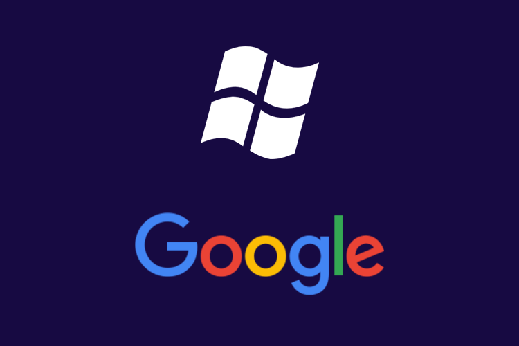
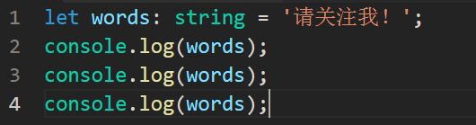

本篇文章旨在介绍下TypeScript这门新兴的程序设计语言，不需要你有多么强的专业知识，只需要你有半支烟的功夫。

好了，废话不多说，赶紧进入正题。为什么你需要拥抱TypeScript？那么你首先需要了解下TypeScript是个什么东东，不然我也只能劝您一句：“路边的野花你不要采”。
TypeScript is a superset of JavaScript.
上面这一句就是官方给他的定义，翻译过来就是“TypeScript是JavaScript的超集”。呵呵，官方的说法依旧还是那么官方哈，其实他的潜台词就是说：“你JavaScript管得了的我要管，你JavaScript管不了的我更要管，这就是我TypeScript”。
听完他霸气的宣言，是不是觉得有种西厂厂公雨化田的风范。当然，如果你还要问我JavaScript是个啥？那我只好向您挥挥衣袖，请您移步询问度娘吧。

知道了TypeScript为何物之后，接下来咱就好好说说为什么我们需要拥抱她？（更多精彩内容请关注微信公众号：it-talk）
在这个“拼爹”的时代，有个牛X的爹你完全可以少奋斗50年，那么TypeScript的“爹”到底是谁呢？如果我告诉你你天天使用的Windows操作系统和Office办公软件是她的大哥大姐，那你能猜到她的“爹”是谁吗？没错，他就是大名鼎鼎的微软。
而且更“可怕”的是：由于谷歌公司的AngularJS也采用了TypeScript进行开发，谷歌与微软也达成了合作，这就相当于谷歌认了TypeScript为“干女儿”。对于谷歌大家应该非常熟悉，我们使用的安卓手机的系统就是谷歌开发的。
有了微软和谷歌这两个牛X的“爹”为她“铺路”，TypeScript的前途也将是前程似锦、一片光明。

开源，即开放源代码，就是指微软将其实现的源码公开了。什么意思呢？就好比我们小时候做练习册，不会写的时候翻看答案，有的答案十分详细，你能看到解题的每一个步骤，这就是开源了。
开源的另一层含义就是说你可以免费使用，甚至商用。自古以来，中国人讲究的是“滴水之恩，涌泉相报”，但由于微软采用的Apache License 2.0开源协议，该协议并不需要你涌泉相报，因为他知道你没钱；也不需要你感念于心，因为他知道你心里只有你的对象（没有对象的赶紧new一个）。该协议只需要你在项目中加上一个版权许可的声明，就能完全免费地使用TypeScript了。
说到开源，就不得不提版权的问题，一般而言，你使用别人的东西都会涉及到版权。最近很热门的一个话题就是关于视觉中国对图片于版权的一个不太好的吃相，虽说他也受到了“从重”处罚，但确实也给我们的版权意识敲了一个警钟——不是什么东西你都能随随便便拿过来使用的，搞不好会让你倾家荡产。
请注意，这里是说TypeScript是很好上手、很好学习的，并不是说她属于《人民的名义》中那个易学习的哦。呵呵，好吧，有点冷！
言归正传，为什么说TypeScript易学习呢？首先，她是基于JavaScript并添加了一些面向对象的特性，所以如果你有JavaScript和其他面向对象语言（如C#、Java）的基础，那么你看到TypeScript代码会有一种熟悉感。当然你要说你实在学不会，那你直接在TypeScript文件中书写JavaScript代码也是可以的，不过这就有点多此一举了哈。
此外，TypeScript还在JavaScript的基础上加上了静态检查，这就使得程序更加的稳定。什么意思呢？ 相信大家都经历过大大小小的考试，当我们写完试卷之后交给老师批改，是对是错要等老师批改之后才能知道，但是现在我们有了静态检查，就相当于你写完试卷了后有个很厉害的角色帮你检查试卷，如果有错误的地方，他能马上给你指出来，这样的话，你是不是每次就能考更高的分甚至是满分了呢？
本文讲述了需要拥抱TypeScript的几点原因，但这并不足以说完TypeScript的优点，也不能说明TypeScript就是万能的，我们需要根据实际的项目按需选择，毕竟只有合适的才是最好的。
下面就以一段TypeScript代码结束本文，你能看出这段代码最后输出的结果是什么吗？欢迎在评论中写出你的答案。

（更多精彩内容请关注微信公众号：it-talk）